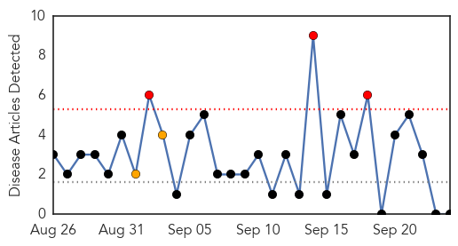
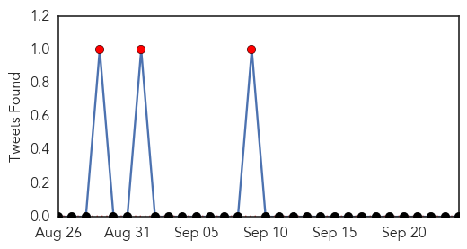

Swine Flu
30-Day Web Trend
3 alerts, 2 warnings

30-Day Twitter Trend
3 alerts, 0 warnings

Article Locations

Article Confidences

Top Articles:
-
No articles found for Sep 24, 2015
Top Tweets:
- 0.663
- Hanging in: Experts pick strains for South hemisphere '16 flu vaccine. H1N1 component unchanged since 2009 pandemic http://t.co/HwvyiUPm6g
Hepatitis
30-Day Web Trend
0 alerts, 0 warnings

30-Day Twitter Trend
1 alerts, 0 warnings
Article Locations

Article Confidences

Top Articles:
- 0.794
- What Is Hepegivirus? New Virus Similar To Hepatitis C Discovered In Blood Supply
- 0.788
- New virus transmitted through blood discovered
- 0.559
- Scientists Discover New Human Virus Similar To Hepatitis C
- 0.542
- Lawsuit filed in potential Hepatitis exposure
- 0.502
- Refugees and migrants are more prone to foodborne diseases
Top Tweets:
-
No tweets found for Sep 24, 2015